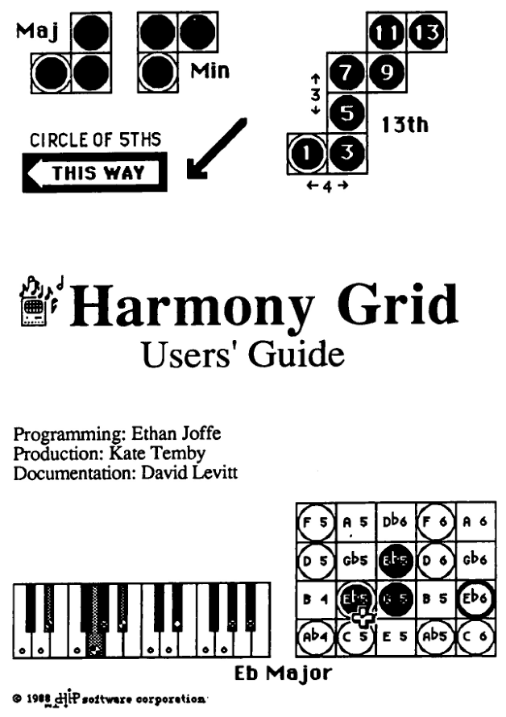
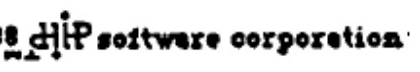
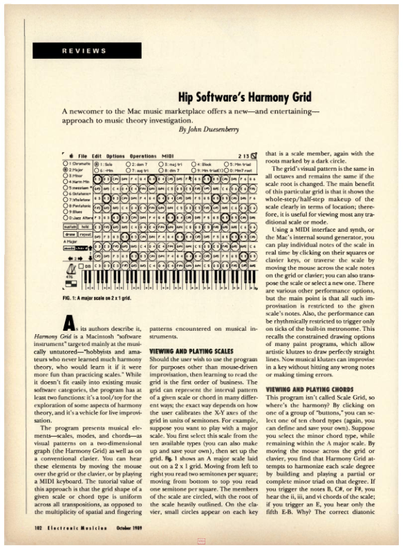
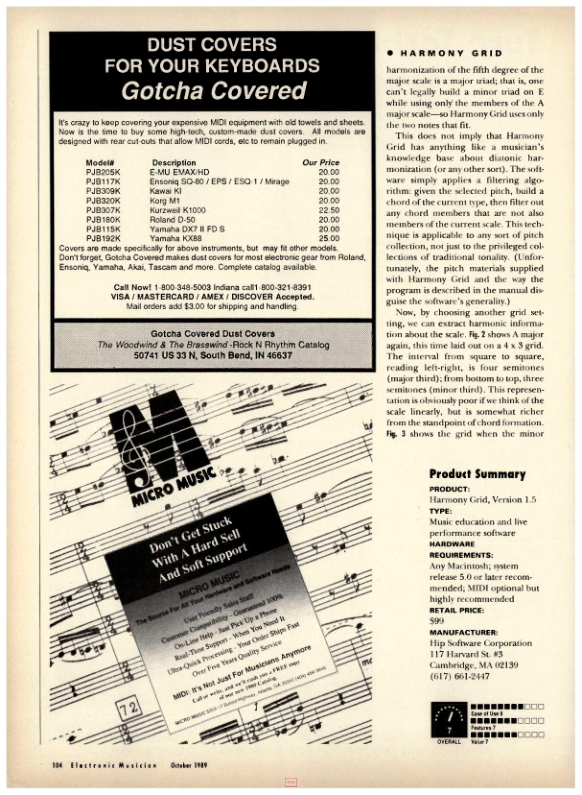
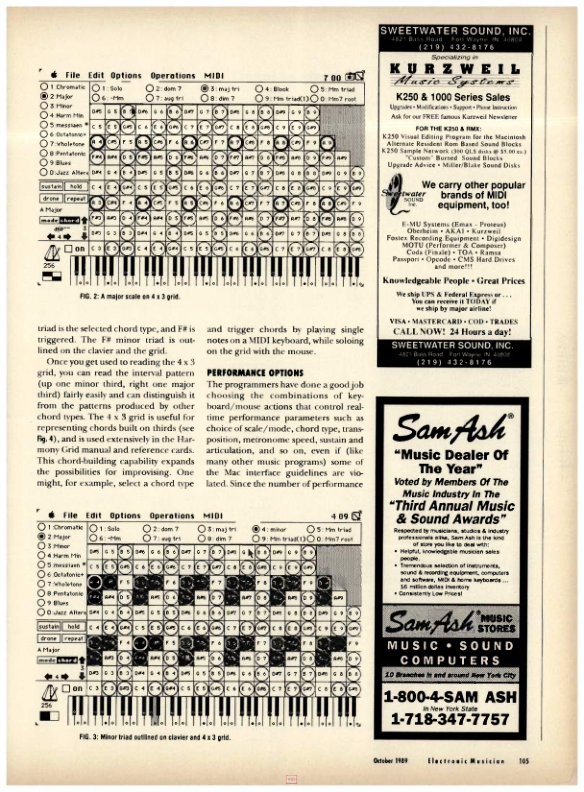
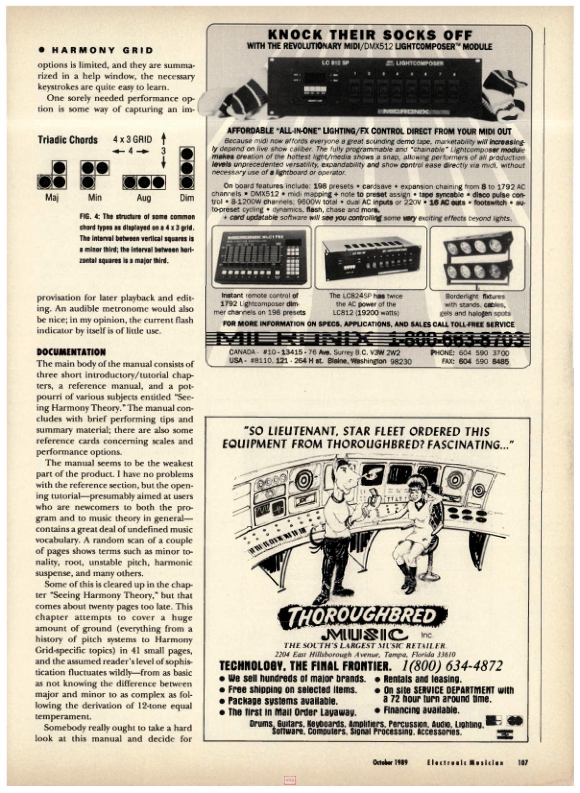
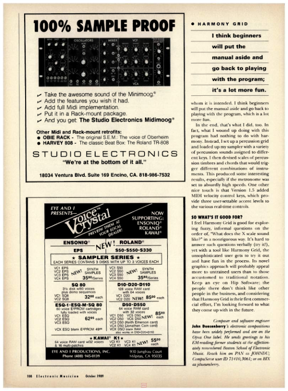
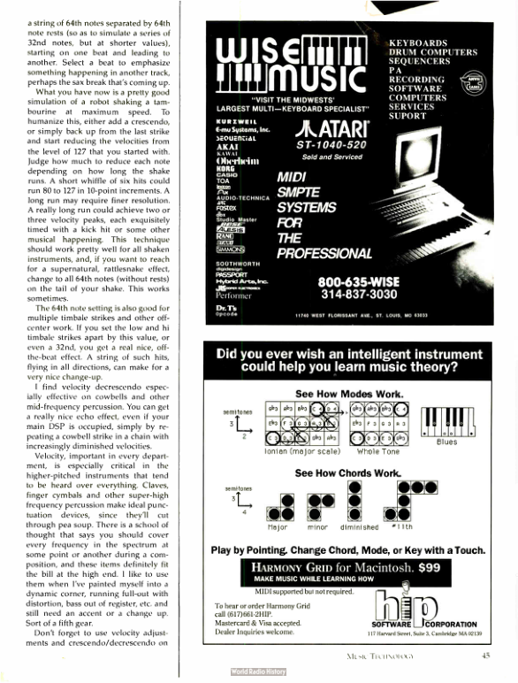

The original Harmony Grid
A musical idea.
A Macintosh.
A new way to play.
Created by Ethan Joffe around 1989 in the Experimental Music Studio at the MIT Media Lab, Harmony Grid made musical relationships something you could see, touch and hear.

The idea
Make harmony visible.
The original Harmony Grid was a Macintosh software instrument for exploring harmony through direct play. David Levitt created the original grid concept. A grid arranged pitches in space; chord shapes moved through it, and modes determined which notes would sound.
A mouse, the computer keyboard, an on-screen clavier and a metronome became a performance interface. Optional MIDI connected the same ideas to an external instrument. You could improvise, investigate musical patterns, or create your own chords and modes.
The manual welcomed people who had never learned an instrument as well as musicians interested in thinking differently about harmony. Learning and playing belonged together.
Hip Software
From the studio to the Mac.

Ethan Joffe and David Levitt cofounded Hip Software. The company, Hip Software Corporation in Cambridge, Massachusetts, published Harmony Grid. Its 1989 advertisements invited Macintosh users to explore modes and chords by pointing, with MIDI available but not required.
Contemporary reviews appeared in Music Technology and Electronic Musician. Harmony Grid occupied an unusual space: a tool for understanding music that was also an instrument to perform with.
- Original grid concept
- David Levitt
- Programming
- Ethan Joffe
- Production
- Kate Temby
- Documentation
- David Levitt
Programming, production and documentation credits appear on the original Users’ Guide cover. The grid concept and cofounder credits are confirmed by Ethan Joffe.
Built for real time
Written in assembly.
Made to respond.
Ethan wrote the original Harmony Grid in assembly language to make it fast enough for real-time interaction on the Macintosh hardware of the day.
That speed served the playing experience. Moving across the grid, changing chords and seeing the notes respond had to feel immediate. The software needed to keep up with the musician’s gestures.
Real-time responsiveness remains central to the browser recreation: the technology has changed, but the need for a playable, responsive instrument has not.
Playing again
The same invitation, today.
This browser recreation brings Harmony Grid back as a real-time instrument. The original manual and Ethan’s recollections guide the work, from the spatial note display to the relationship between dragging, rhythm and sustained notes.
The aim is to preserve the experience of playing it: an instrument that responds to your gestures and gives you room to discover something musical.
Play Harmony Grid ↗Historical tidbits
From the archives.
Electronic Musician · October 1989
John Duesenberry reviewed Harmony Grid’s visual approach to harmony, its performance controls and the manual. For convenience, this page selection is shown below for direct reading and historical context.
Open source issue in browser ↗
The content of these scans is shared for scholarship, archiving, and research under U.S. fair-use principles. The scans are provided by World Radio History for preservation and study. If you are a rights holder, contact World Radio History for rights questions.
Review pages only (printed page numbers): 102 · 104 · 105 · 107 · 108.





Music Technology · June 1989
The original Hip Software advertisement shows Harmony Grid’s clavier, mode system, and chord controls, and advertises a $99 price with optional MIDI.
Open original advertisement in source issue ↗

As with all source pages, scan quality and content ownership follow the source archive’s terms.
Pages are re-hosted here to support direct review and study in a local offline-friendly layout.
The Macintosh assembly world
The graphics system spoke assembly, too. QuickDraw, the original Macintosh bitmap graphics library, comprised 17,101 lines of Motorola 68000 assembly. Fast visual interaction was built on carefully written low-level code. Computer History Museum archive ↗
Even MacPaint mixed languages for speed. Its source combined 5,822 lines of Pascal with 3,583 lines of assembly for high-performance routines and operating-system interfaces. Assembly was a practical tool for making an interactive application feel responsive. Original source-code collection ↗
Debugging could happen one instruction at a time. Apple’s 1989 MacsBug 6.1 debugger let developers step through execution, inspect processor registers, and display or change memory. It could also break on Macintosh system calls known as A-traps. Apple’s MacsBug reference ↗
These details describe the contemporary Macintosh development environment; they do not identify the specific tools or routines used in Harmony Grid.
The original manual
Explore the Users’ Guide.
Read the original scanned manual, including the playing controls, grid diagrams, harmony lessons and performance tips.
Historical sources: the original Harmony Grid Users’ Guide (cover and introduction); Ethan Joffe’s recollections of its MIT Media Lab origins, Hip Software’s cofounders, David Levitt’s original grid concept and the original assembly-language implementation; a Hip Software advertisement in Music Technology, August 1989; reviews in Music Technology, June 1989 and Electronic Musician, October 1989.